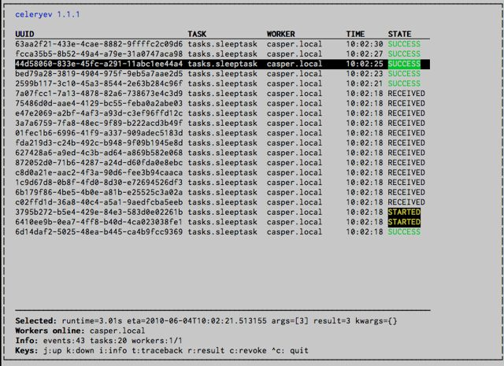

présentation Celery
Python-Nantes, mai 2016
par sayoun
About me
- Dejan Filipovic
- Travaille chez Gandi depuis 4 ans
- API/Backend/Tools/Ops

Celery, qu'est ce que c'est ?
Crée en 2009 par Ask Solem (@asksol)
Un système asynchrone de queue de tâches distribuées
Un quoi ???
Un système asynchrone
Non bloquant, peut être executé plus tard ou en parallèle, sans forcément avoir besoin du résultat immédiatement. Peut aussi être executé de façon périodique (comme une cron).
de queue
File d'attente appelée Broker en language Celery
S'occupe de transporter des messages
de tâches
une tâche = une ou plusieurs actions à faire
voyez ça comme une fonction de code unitaire
appelée Task en language Celery
distribuées
tâches qui peuvent être réparties sur
- une ou plusieurs machines (scaling horizontal)
- un ou plusieurs processus (scaling vertical)
executées par des Worker en language Celery
OK mais à quoi ça peut servir dans la vraie vie ?
- Envoyer des milliers de mails
- Faire des traitement lourds/longs d'images/vidéos
- Générer des PDF
- Interaction réseau/API externes
- Faire du calcul distribué
Comment ça marche ? (en théorie)
Comment ça marche ? (en pratique)
D'abord choisir son broker
- RabbitMQ
- Redis
- Mongo DB
- Django DB
- Couch DB
- SQLAlchemy
- etc.
sudo apt-get install redis-server
pip install celery
pip install redis
from celery import Celery
app = Celery('tasks', broker='redis://', backend='redis://')
@app.task
def palindrome(chaine):
return chaine == chaine[::-1]
class PalindromeTask(app.Task):
def run(self, chaine):
return chaine == chaine[::-1]
$ celery -A tasks worker --loglevel=info
-------------- celery@void v3.1.19 (Cipater)
---- **** -----
--- * *** * -- Linux-3.13.0-85-generic-x86_64-with-Ubuntu-14.04-trusty
-- * - **** ---
- ** ---------- [config]
- ** ---------- .> app: tasks:0x7fc79fca2d10
- ** ---------- .> transport: redis://localhost:6379//
- ** ---------- .> results: redis://localhost
- *** --- * --- .> concurrency: 4 (prefork)
-- ******* ----
--- ***** ----- [queues]
-------------- .> celery exchange=celery(direct) key=celery
[tasks]
. tasks.palindrome
[2016-05-15 17:16:33,844: INFO/MainProcess] Connected to redis://localhost:6379//
[2016-05-15 17:16:33,850: INFO/MainProcess] mingle: searching for neighbors
[2016-05-15 17:16:34,855: INFO/MainProcess] mingle: all alone
[2016-05-15 17:16:34,868: WARNING/MainProcess] celery@void ready.
>>> from tasks import palindrome
>>> result = palindrome.delay('kayak')
>>> result
<AsyncResult: 14046de3-db5a-4fb4-9cad-384c2e07a146>
>>> result.state
'SUCCESS'
>>> result.get()
True
aller plus loin avec les primitives
Celery vient avec des outils qui permettent d'exécuter des tâches dépendantes les unes des autres: group, chord, chain, etc.
Group
Exécuter les tâches en parallèle
@app.task
def add(x, y):
return x + y
>>> from celery import group
>>> res = group(add.s(i, i) for i in xrange(5))()
>>> res.get()
[0, 2, 4, 6, 8]
Chord
Exécuter un groupe de tâche en parallèle puis une tâche à la fin (callback)
@app.task
def total(nombres):
return sum(nombres)
>>> from celery import chord
>>> res = chord((add.s(i, i) for i in xrange(5)), total.s())()
>>> res.get()
20
Chain
Exécuter les tâches les unes après les autres, en se passant les résultats, revient à avoir une chaîne de callbacks
>>> from celery import chain
>>> res = chain(add.s(2, 2), add.s(4), add.s(8))()
>>> res.get()
16
>>> chain(add.s(2, 2), add.s(4), add.s(8))
tasks.add(2, 2) | tasks.add(4) | tasks.add(8)
>>> res = (add.s(2, 2) | add.s(4) | add.s(8))()
>>> res.get()
16
Map
Pour appeler une tâche sur chaque élément d'une séquence
Différent de Group car une seule task est envoyée au Broker et c'est éxécuté séquentiellement
>>> ~total.map([range(10), range(100)])
[45, 4950]
@app.task
def temp():
return [total(range(10)), total(range(100))]
Starmap
Comme Map mais appliqué à *args
>>> ~add.starmap(zip(range(10), range(10)))
[0, 2, 4, 6, 8, 10, 12, 14, 16, 18]
@app.task
def temp():
return [add(i, i) for i in range(10)]
Chunks
Permet de découper une liste d'arguments en bouts
>>> items = zip(range(10), range(10))
>>> add.chunks(items, 5)
celery.chunks(it=[(0, 0), (1, 1), (2, 2), (3, 3), (4, 4), (5, 5),
(6, 6), (7, 7), (8, 8), (9, 9)], task=tasks.add(), n=5)
>>> add.chunks(items, 5)().get()
[[0, 2, 4, 6, 8], [10, 12, 14, 16, 18]]
Task celery.starmap[2] succeeded in 0.1s: [0, 2, 4, 6, 8]
Task celery.starmap[3] succeeded in 0.1s: [10, 12, 14, 16, 18]
Periodicité/Récurrence
Utiliser CeleryBeat
$ celery -A tasks -B -c 1
from datetime import timedelta
CELERYBEAT_SCHEDULE = {
'add-every-30-seconds': {
'task': 'tasks.add',
'schedule': timedelta(seconds=30),
'args': (16, 16)
},
}
from celery.schedules import crontab
CELERYBEAT_SCHEDULE = {
'add-every-monday-morning': {
'task': 'tasks.add',
'schedule': crontab(hour=7, minute=30, day_of_week=1),
'args': (16, 16),
},
}
Monitoring: Flower
$ pip install flower
$ celery -A tasks flower
[I 160515 18:27:39 command:136] Visit me at http://localhost:5555
[I 160515 18:27:39 command:141] Broker: redis://localhost:6379//
[I 160515 18:27:39 command:144] Registered tasks:
['celery.backend_cleanup',
'celery.chain',
'celery.chord',
'celery.chord_unlock',
'celery.chunks',
'celery.group',
'celery.map',
'celery.starmap',
'tasks.palindrome']
[I 160515 18:27:39 mixins:231] Connected to redis://localhost:6379//


Monitoring: Curses
- Documentation Celery: http://docs.celeryproject.org
- IRC: #celery channel sur Freenode
- Flower: http://flower.readthedocs.io
- Celery + Django: voir la documentation